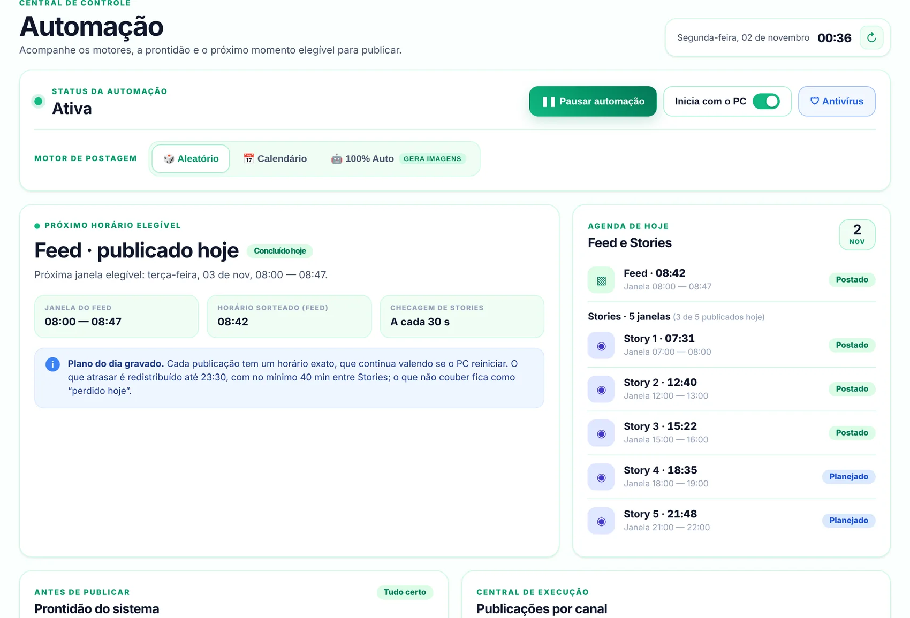
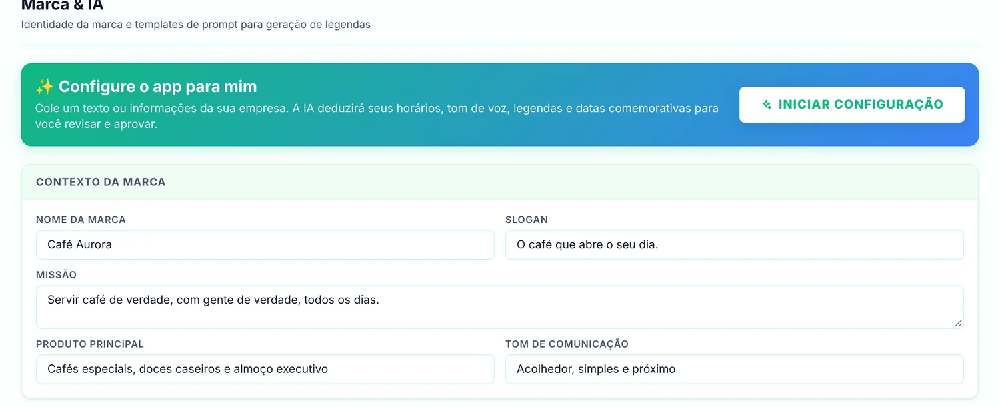

Você ainda está abrindo as portas.
O primeiro Story do dia sai sozinho, no horário que você escolheu.
O LocalInsta escreve as legendas, escolhe os horários e publica seu Feed e Stories direto do seu computador. Enquanto você cuida do negócio, sua conta continua aparecendo para novos clientes.
30 dias grátis, sem cartão. Para Windows 10 e 11.
Um dia com o LocalInsta
O primeiro Story do dia sai sozinho, no horário que você escolheu.
A imagem vai para o perfil com o texto que a IA escreveu, no tom da sua marca.
Você atende. O Story do meio-dia já foi publicado.
Quem passa pelo seu perfil vê movimento de hoje, não de semana passada.
Mais um Story no ar, enquanto você fecha o caixa.
O último Story do dia sai no horário. Amanhã, de novo, sem você precisar lembrar.
0 no Feed0 Stories0 minutos seus

121A agenda de hoje mostra cada horário já sorteado e o que foi publicado.
2Escolha como ele trabalha: aleatório, pelo calendário ou 100% automático.
Nome, produto e jeito de falar. A IA usa isso para escrever legendas que parecem suas, não de um robô.
Ou cole um texto sobre a empresa e deixe o app preencher o resto para você revisar.

Cada dia, horários diferentes dentro das suas janelas.
Você decide o dia. Ele publica na data.
Imagens criadas com IA, nas cores da sua marca.
Antes e depois, horários livres e promoções da semana saindo sozinhos enquanto você atende.
Ver como ficaPrato do dia, cardápio e combo do almoço no ar antes da fome bater.
Ver como ficaBanho e tosa, vacinas e novidades da loja aparecendo para quem mora perto.
Ver como ficaAssista ao painel em uso e entenda, em poucos minutos, como a sua rotina de posts passa a rodar sozinha.
Configure o LocalInsta, conecte a conta, faça o teste e coloque a primeira rotina em movimento.
Veja como o LocalInsta olha a sua foto e escreve a legenda no jeito da sua empresa.
O LocalInsta não é produto oficial, afiliado, patrocinado ou endossado pelo Instagram ou pela Meta. Você continua responsável pela conta, pelas mídias, pelo conteúdo publicado e pelas regras que escolhe usar.
Primeiro mêsR$ 0
30 dias grátis, sem cartão.
Não achou a sua? Chama a gente no WhatsApp, que responde gente de verdade.
Perguntar no WhatsAppNão. O LocalInsta é um programa para computador com Windows 10 ou 11. Você continua usando o Instagram normalmente no celular; quem publica é o seu PC.
Sim. As publicações saem do seu computador, então ele precisa estar ligado e com internet nos horários. Se ele estiver desligado na hora, o LocalInsta reorganiza o que atrasou ao longo do dia, até às 23h30.
Não. São 30 dias grátis, sem cadastrar cartão. Você só paga se decidir continuar.
Hoje sai R$ 00,00 por mês, cerca de R$ 0,00 por dia. O valor acompanha a cotação do dólar, então pode variar um pouco. O preço final aparece no app na hora de assinar.
Usando em um ritmo normal, o LocalInsta publica como uma pessoa faria: horários sorteados dentro das janelas que você escolhe e intervalo mínimo entre Stories.
O risco aparece quando se exagera. Configurar algo como 80 Stories por dia não parece humano e pode fazer o Instagram limitar a conta. Mantenha um ritmo realista e faça o primeiro teste com calma.
É só não renovar. Não tem fidelidade nem multa: quando o período pago acaba, a automação para sozinha.
Não. O aviso aparece porque o instalador ainda não tem uma assinatura digital paga. Clique em Mais informações e depois em Executar assim mesmo. Se preferir, a gente instala com você pelo WhatsApp.
Não. O app tem um passo a passo na primeira configuração, mini-cursos em vídeo aqui no site e suporte pelo WhatsApp.
Teste grátis por 30 dias. Baixe o instalador para Windows, abra o LocalInsta e siga o passo a passo da primeira configuração, com calma.